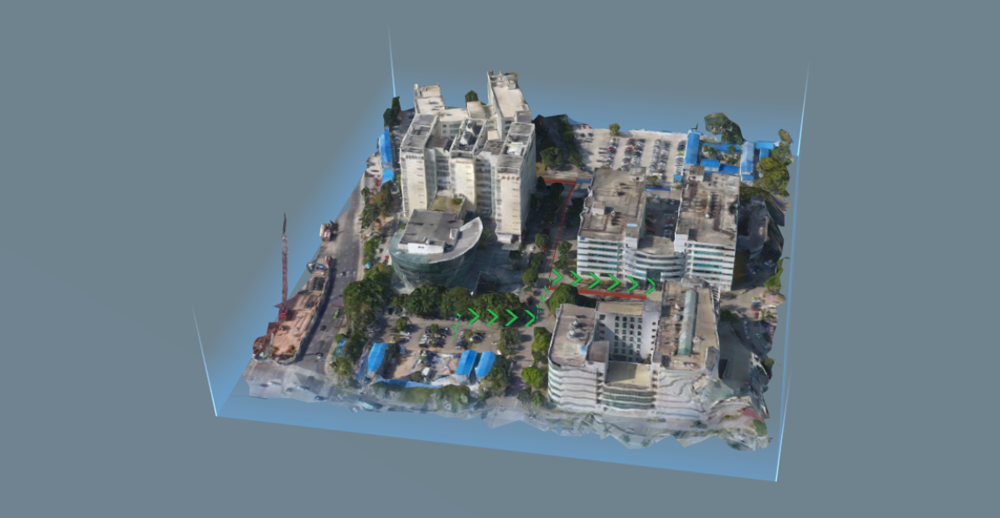
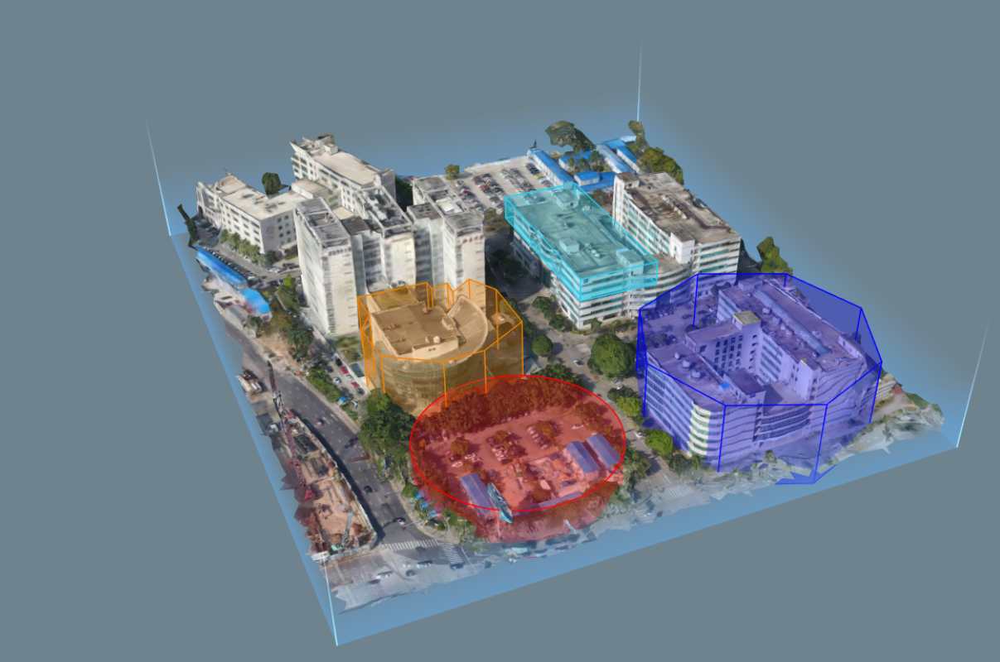

3D SDK 教程 3.添加、删除 Marker
本章节分为小白部分和进阶部分，小白部分仅介绍如何添加最基础的 marker ，之后在进阶部分会对 marker 更加丰富的功能和更加多样的种类进行说明和列举。
众所周知，数据可以分为点、线、面，因此我们也有相对应的 marker 来帮助您实现应用。
1. 小白部分
1.1 添加点数据 -- TagMarker
Tag Marker 是最基础的点数据的添加
let tag1 = new altizure.TagMarker({
// icon image url
imgUrl: '../public/assets/img/meta_description.png',
// icon position
position: {lng: 113.9390549031058, lat: 22.53601411862488, alt: 59.03098709697936},
// scene
sandbox: sandbox,
// icon size
scale: 1
})
在这里需要设置 marker 的图标、位置、大小等。
相关部分请参考范例 2.2
1.2 添加线数据 -- PolyLineMarker

let pts3 = [
{lng:113.94004434545403, lat:22.536430666836896, alt:8.529936080552108},
{lng:113.93989197826778, lat:22.53642506074514, alt:8.37267703295911},
{lng:113.93992379693061, lat:22.536772011456577, alt: 14.698098228363094},
{lng:113.93948096227913, lat:22.536774790964845, alt: 8.07877871224377},
{lng:113.93946847564925, lat:22.537257065188992, alt: 7.9259919311032805},
{lng:113.93937849508251, lat: 22.537250183225215,alt: 9.203476070513277}
]
let pl3 = new altizure.PolyLineMarker({
name: 'pl3',
sandbox: sandbox,
points: pts3,
color: 0x26b74f,
fenceHeight: 10
})
这里需要设置 polyline marker 的点、颜色、线的高度等。 相关代码请参考范例2.4
1.3 添加面/体数据 -- PolygonMarker

let volume1 = {
color: 0xf18100,
opacity: 0.3,
points: [
{lng:113.93925941184116, lat:22.536038196392003, alt::0},
{lng:113.93939916032888, lat:22.53604334346038, alt::0},
{lng:113.93949169260934, lat:22.535989287779092, alt::0},
{lng:113.93968369699786, lat:22.536004548701953, alt::0},
{lng:113.93980670120246, lat:22.536189580024878, alt::0},
{lng:113.93979655362506, lat:22.536343017899227, alt::0},
{lng:113.93966951962702, lat:22.536531935218072, alt::0},
{lng:113.93941344618156, lat:22.536525930027356, alt::0},
{lng:113.93929820633633, lat:22.536458412171328, alt::0},
{lng:113.93936482152544, lat:22.53637169479775, alt::0},
{lng:113.93929172179965, lat:22.53637475960443, alt::0},
{lng:113.9393084139167, lat:22.53630775602314, alt::0},
{lng:113.93925819093029, lat:22.53630539546885, alt::0},
{lng:113.93925941184116, lat:22.536038196392003, alt::0}
]
top: 40,
bottom: 0,
}
let poly1 = new altizure.PolygonMarker({
volume: volume1,
sandbox: sandbox,
name: 'polygon1',
})
多边形需要闭合，即所用点数组的首尾两个点需要一样。
这里需要设置 polygon marker 的点、颜色、高度等。
相关代码请参考范例2.3
1.4 删除 Marker
所有的 Marker 都可用 duxtruct 进行删除
marker.destruct()
删除后此 Makrer 将不存在并释放所有占用的资源。
1.5 小结
至此，最基础的点、线、面的数据和相应 marker 如何显示和删除已经介绍完了。
建议您先完成其他教程的小白部分，之后在尝试进阶部分。
2. 进阶部分
2.1 marker 的鼠标事件
这里所列的所有 marker 都可以相应鼠标事件。
首先要打开 marker 的 interactable
tag.interactable = true
然后对想要响应的鼠标事件进行定义，目前开放的鼠标事件如下。
tag.on('mouseenter', function(e) { console.log("enter") })
tag.on('mouseleave', function(e) { console.log("leave") })
tag.on('mouseover', function(e) { console.log("over")})
tag.on('click', function(e) { console.log("click")})
tag.on('mousedrag', function(e) { console.log("darg")})
2.2 更多的点状 marker
2.2.1 文字标签 -- TextTagMarker
和 TagMarker 使用方法大致相同，本 marker 可以自定义显示的文字信息。 相关代码和效果请参考范例 2.6。
2.2.2 自定义标签 -- CanvasTagMarker
和 TagMarker 使用方法大致相同，本 marker 可以自定义显示的信息，调整方法与 HTML 的 canvas 标签一致。 相关代码和效果请参考范例 2.9。
2.2.3 光柱标签 -- LightBeamMarker
简单实用的光柱 marker。 相关代码和效果请参考范例 2.10。
2.3 更多的线状 marker
2.3.1 圆柱形多段线 -- PolyCylinderLineMarker
只能调颜色和透明度的圆柱形多段线。 相关代码和效果请参考范例 2.8。
2.3.2 自定义动画的圆柱形多段线 -- PolyTubeLineMarker
可以看作PolyCylinderLineMarker的升级版，可以添加动画效果。 相关代码和效果请参考范例 2.14。
2.4 更多的面/体状 marker
2.4.1 正多边形 -- RegularPolygonMarker
使用方法与 PolygonMarker 大致相同，不过需要设置本多边形的中心位置、半径、边数等。 相关代码和效果请参考范例 2.3。
2.4.2 圆柱 -- CylinderVolumeMarker
使用方法与 PolygonMarker 大致相同，不过需要设置本多边形的中心位置、半径等。 相关代码和效果请参考范例 2.3。
2.4.3 区域 -- ZoneMarker
定制化的多边形的应用，可以方便用户在不同角度看到和本多边形有关的文字（如：“禁止进入”）。 相关代码和效果请参考范例 2.11。
2.4.4 挖坑 -- DitchMarker
已包装好的 PolygonMarker ，具有类似土壤的贴图，适宜用作管线填挖、路面开挖、地基房基等的展示。 相关代码和效果请参考范例 6.3。
3. 小结
本教程介绍了 Altizure SDK 中经常使用的 marker ，
4. 了解更多
—
该文档最后修改于 Wed Sep 04 2019 11:13:28 GMT+0000 (Coordinated Universal Time)